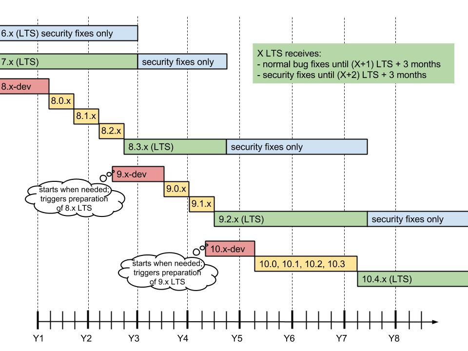
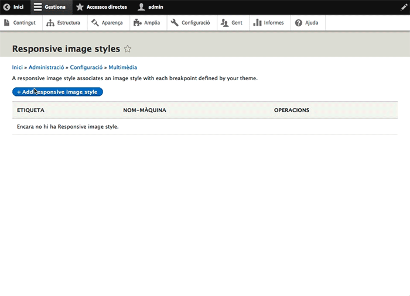
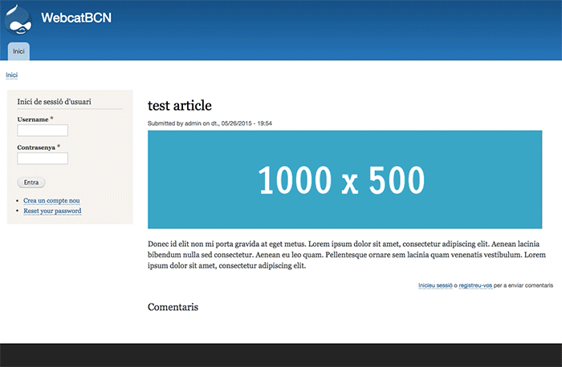

Cristina Chumillas
Designer and frontend developer at Ymbra

Drupal
Drupal timeline
Drupal 8.1
Mobile First
Tractament responsive a tots els elements
Themes, imatges, taules…

Administració

Mobile-friendly toolbar

Breakpoints
bartik.breakpoints.yml
bartik.mobile:
label: mobile
mediaQuery: ''
weight: 2
multipliers:
- 1x
bartik.narrow:
label: narrow
mediaQuery: 'all and (min-width: 560px) and (max-width: 850px)'
weight: 1
multipliers:
- 1x
Responsive images
Responsive images
New theme system: Twig
<?php
/**
* @file
* File description
*/
?>
{#
/**
* @file
* File description
*/
#}